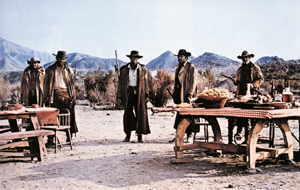

Talijanski skladatelj Ennio Morricone proslavio se filmskom glazbom, a skladao je vokalnu i instrumentalnu glazbu, komorna i simfonijska djela, glazbu za kazališne komade i pjesme za revije. Glazbu je studirao na akademiji Santa Cecilia u Rimu. Ostavio je neizbrisiv trag u svijetu glazbe i filma, surađujući s nizom istaknutih redatelja. Stvorio je uspješan stilski hibrid između klasične i popularne glazbe, rabeći mješavinu folka, rocka i zborsko-orkestralnog idioma. Napisao je partiture za više od 350 filmova. Hrvatska enciklopedija i Filmski leksikon donose priču o umjetničkom geniju jednoga od najcjenjenijih filmskih skladatelja.
Morricone od 1955. sklada za kazalište i film, isprva anonimno. U početku često sklada pod pseudonimima Don Savio i Leo Nichols proslavivši se skladbama u špageti-vesternima Sergija Leonea Za šaku dolara, Za dolar više, Dobar, ružan, zao i Bilo jednom na Divljem zapadu. Uveo je nov način skladanja za vesterne, a njegovu glazbu posebno obilježavaju prepoznatljivi ritmovi. Paralelno je djelovao i u Sjedinjenim Američkim Državama.
Pet je puta bio nominiran za Oscara: Božanstveni dani (Terrence Malick, 1978), Misija (Roland Joffé, 1986), Nedodirljivi (Brian De Palma, 1987), Bugsy (Barry Levinson, 1991) i Malèna (Giuseppe Tornatore, 2000), a osvojio ga je 2015. za film Mrska osmorka (Quentin Tarantino). Godine 2007. primio je počasnog Oscara za životno djelo. Surađivao je s nizom istaknutih redatelja, kao što su Dario Argento, Bernardo Bertolucci, Mauro Bolognini, Pier Paolo Pasolini, Liliana Cavani, Elio Petri, Giuseppe Tornatore i John Carpenter.

Bilo jednom na Divljem zapadu
U Hrvatskoj enciklopediji možete potražiti mnogobrojne zanimljivosti o glazbenoj i filmskoj umjetnosti, najpoznatijim umjetničkim ostvarenjima i smjerovima, žanrovima i umjetnicima. Filmski leksikon kao vješto napisan pojmovnik i osobnik svijeta filma također nudi mnoštvo biografskih članaka, definicija filmoloških pojmova i profesija, stilskih formacija i smjerova.